Peynir, tereyağı, bal ve kumaş gibi ürünleri işleyip çiftlikten daha çok para kazan.
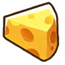
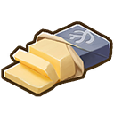
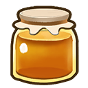
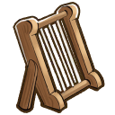
📖 Wiki'den: Makineler ve malzemeler
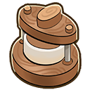
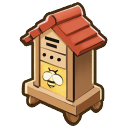
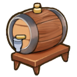
Zanaat ürünleri, ham malzemelerinden daha pahalıya satılır. Kalite, girdi kalitesine bağlıdır.
Gölün ortasındaki tapınakta 4 altar var; adakları tamamlayıp adayı iyileştir ve ödüller kazan.
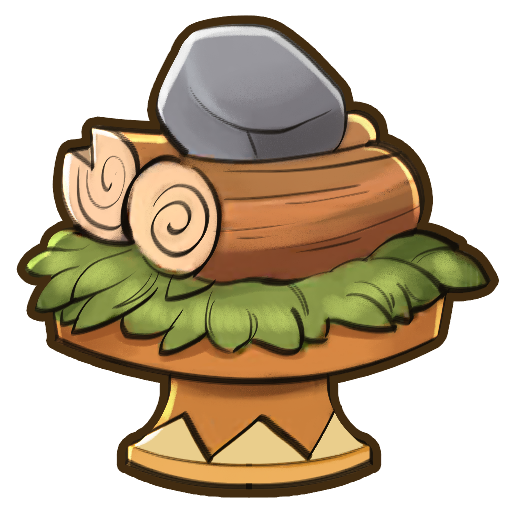
📖 Wiki'den: Ödüller ve sıralama
- 1 adak → Hızlı seyahat (waypoint) + Catch Altar açılır
- 2 adak → Kaplıca (bath house) + Advanced Altar
- 6 adak → Orta orman erişimi
- 14 adak → Derin orman erişimi
- 18 adak → Savanna erişimi
- Crop Altar tamamlanınca → Sera (Greenhouse) 🌱
"Mythical Dream" görevi tamamlanınca adak yapılmaya başlanır. Her adak 45 heritage puanı verir.
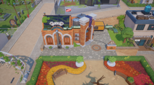
Ling'in laboratuvarında tohum, fidan ve yem kalitesini yükselt — ürünlerin daha değerli olsun.
📖 Wiki'den: Fiyatlar ve kelp özü
Yükseltmeler coin + kelp özü ile yapılır (kelp'i okyanustan toplarsın). Her yükseltme 2 gün sürer. Örn. Osmium tohum: 20.000 coin + 5 Osmium kelp özü.
Çiftliğe bir dost ekle! Sahiplenme ücretsiz ama önce Town Rank E + evcil hayvan yatağı gerekiyor.
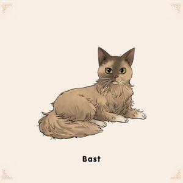
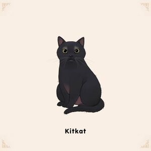
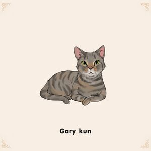
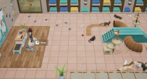
📖 Wiki'den: Sahiplenme detayı
Seçenekler: kedi, köpek, tilki, kertenkele, tavşan. Başlangıçta 1 evcil hayvan; ev yükseltmeleriyle toplam 3'e kadar.
Fall 28'de kasabada 19:00'dan itibaren. Kostüm giy, mini oyunlara katıl, geçit törenini izle.
📖 Wiki'den: Festival bilgisi
Fall 28, kasabada 19:00'dan itibaren. Festival başlamadan bir gün önce bildirim gelir; katılım zorunlu değildir.
💬 Tüm Yorumlar